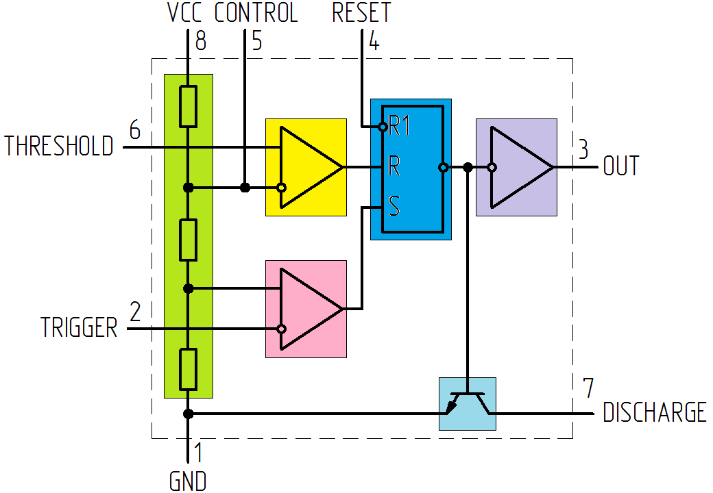
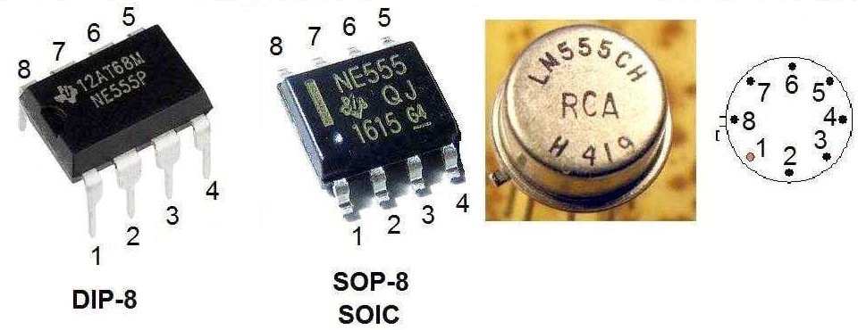
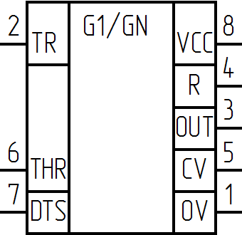

Микросхема NE555
Микросхема NE555 — универсальный таймер — устройство для формирования (генерации) одиночных и повторяющихся импульсов со стабильными временными характеристиками. Впервые выпущен в 1971 году компанией Signetics. Функциональные аналоги оригинального NE555 выпускаются во множестве биполярных и КМОП-вариантов. Отечественным аналогом данной микросхемы является КР1006ВИ1. Сдвоенная версия 555 выпускается под обозначением 556, счетверенная — под обозначением 558.
Таблица 1
| Производитель | Название микросхемы |
|---|---|
| ECG Philips | ECG955M |
| Exar | XR-555 |
| Fairchild | NE555 |
| Harris | HA555 |
| Intersil | SE555/NE555 |
| Lithic Systems | LC555 |
| Maxim | ICM7555 |
| Motorola | MC1455/MC1555 |
| National | LM1455/LM555C |
| NTE Silvania | NTE955M |
| Raytheon | RM555/RC555 |
| RCA | CA555/CA555C |
| Sanyo | LC7555 |
| Texas Instruments | SN52555/SN72555 |
Микросхема NE555 представляет собой асинхронный RS-триггер со специфическими порогами входов, точно заданными аналоговыми компараторами и встроенным делителем напряжения.
Микросхема NE555 имеет высокую плотность монтажа при низкой себестоимости, чем заслужила высокую популярность. Применяется для построения различных генераторов, модуляторов, реле времени, пороговых устройств и прочих узлов электронной аппаратуры.
Устройство NE555
Внутреннее устройство NE555 включает в себя пять функциональных узлов (рис. 1).

На входе расположен резистивный делитель напряжения, который формирует два опорных напряжения для прецизионных компараторов. Выходные контакты компараторов поступают на следующий блок – RS-триггер с внешним выводом для сброса, а затем на усилитель мощности. Последним узлом является транзистор с открытым коллектором, который может выполнять несколько функций, в зависимости от поставленной задачи.
Рекомендуемое напряжение питания для ИМС типа NA, NE, SA лежит в интервале 4,5 … 16 В, а для SE может достигать 18 В. При этом ток потребления при минимальном Uпит равен 2–5 мА, при максимальном Uпит – 10–15 мА. Некоторые ИМС 555 КМОП-серии потребляют не более 1 мА. Наибольший выходной ток импортной микросхемы может достигать значения в 200 мА. Для КР1006ВИ1 он не выше 100 мА.
Качество сборки и производитель сильно влияют на условия эксплуатации таймера. Например, диапазон рабочих температур NE555 составляет от 0 до 70°C, а SE555 — от -55 до +125°C, что важно знать при конструировании устройств для работы в открытой окружающей среде.
NE555 и её аналоги преимущественно выпускаются в восьмивыводном корпусе типа PDIP8, TSSOP или SOIC. Расположение выводов микросхемы NE555 в различных корпусах показано на рис. 2.


Назначение выводов:
- 0V — Общий (GND). Подключается к минусу питания устройства.
- TR — Запуск (TRIGGER). Подача импульса низкого уровня на вход второго компаратора приводит к запуску и появлению на выходе сигнала высокого уровня, длительность которого зависит от номинала внешних элементов R и С.
- OUT — Выход. Высокий уровень выходного сигнала равен (Uпит-1,5В), а низкий – около 0,25 В. Переключение занимает около 0,1 мкс.
- R — Сброс (RESET). Данный вход имеет наивысший приоритет и способен управлять работой таймера независимо от напряжения на остальных выводах. Для разрешения запуска необходимо, чтобы на нём присутствовал потенциал более 0,7 В. Поэтому его через резистор соединяют с питанием схемы. Появление импульса менее 0,7 В запрещает работу NE555.
- CV — Контроль (CONTROL VOLTAGE). Данный вывод напрямую соединен с делителем напряжения и в отсутствие внешнего воздействия выдаёт 2/3 Uпит. Подавая на вывод CONTROL VOLTAGE управляющий сигнал, можно получить на выходе модулированный сигнал. В простых схемах он подключается к внешнему конденсатору.
- THR — Останов (THRESHOLD). Является входом первого компаратора, появление на котором напряжения более 2/3Uпит останавливает работу триггера и переводит выход таймера в низкий уровень. При этом на выводе 2 должен отсутствовать запускающий сигнал, так как TRIGGER имеет приоритет перед THRESHOLD.
- DTS — Разряд (DISCHARGE). Соединен напрямую с внутренним транзистором, который включен по схеме с общим коллектором. Обычно к переходу коллектор-эмиттер подключают времязадающий конденсатор, который разряжается, пока транзистор находится в открытом состоянии. Реже используется для наращивания нагрузочной способности таймера.
- VCC — Питание. Подключается к плюсу источника питания 4,5…16 В.
| ПАРАМЕТР | УСЛОВИЯ ИСПЫТАНИЙ | SE555 | NA555 NE555 SA555 |
|||||
|---|---|---|---|---|---|---|---|---|
| мин. | тип. | макс | мин. | тип. | макс. | |||
| Уровень напряжения на выводе THRES, В | VCC = 15 В | 9.4 | 10 | 10.6 | 8.8 | 10 | 11.2 | |
| VCC = 5 В | 2.7 | 3.3 | 4 | 2.4 | 3.3 | 4.2 | ||
| Ток через вывод THRES, нА | 30 | 250 | 30 | 250 | ||||
| Уровень напряжения на выводеTRIG, В | VCC = 15 В | 4.8 | 5 | 5.2 | 4.5 | 5 | 5.6 | |
| TA = от –55°C до 125°C | 3 | 6 | ||||||
| VCC = 5 В | 1.45 | 1.67 | 1.9 | 1.1 | 1.67 | 2.2 | ||
| TA = от –55°C до 125°C | 1.9 | |||||||
| Ток через вывод TRIG, мкА | при 0 В на TRIG | 0.5 | 0.9 | 0.5 | 2 | |||
| Уровень напряжения на выводе RESET, В | 0.3 | 0.7 | 1 | 0.3 | 0.7 | 1 | ||
| TA = от –55°C до 125°C | 1.1 | |||||||
| Ток через вывод RESET, мА | при VCC на RESET | 0.1 | 0.4 | 0.1 | 0.4 | |||
| при 0 В на RESET | –0.4 | –1 | –0.4 | –1.5 | ||||
| Переключающий ток на DISCH в закрытом состоянии, нА | 20 | 100 | 20 | 100 | ||||
| Переключающее напряжение на DISCH в открытом состоянии, В | VCC = 5 В, IO = 8 мA | 0.15 | 0.4 | |||||
| Напряжение на CONT, В | VCC = 15 В | 9.6 | 10 | 10.4 | 9 | 10 | 11 | |
| TA = от –55°C до 125°C | 9.6 | 10.4 | ||||||
| VCC = 5 В | 2.9 | 3.3 | 3.8 | 2.6 | 3.3 | 4 | ||
| TA = от –55°C до 125°C | 2.9 | 3.8 | ||||||
| Низкий уровень напряжения на выходе, В | VCC = 15 В, IOL = 10 мA | 0.1 | 0.15 | 0.1 | 0.25 | |||
| TA = от –55°C до 125°C | 0.2 | |||||||
| VCC = 15 В, IOL = 50 мА | 0.4 | 0.5 | 0.4 | 0.75 | ||||
| TA = от –55°C до 125°C | 1 | |||||||
| VCC = 15 В, IOL = 100 мА | 2 | 2.2 | 2 | 2.5 | ||||
| TA = от –55°C до 125°C | 2.7 | |||||||
| VCC = 15 В, IOL = 200 мA | 2.5 | 2.5 | ||||||
| VCC = 5 В, IOL = 3.5 мA | TA = от –55°C до 125°C | 0.35 | ||||||
| VCC = 5 В, IOL = 5 мA | 0.1 | 0.2 | 0.1 | 0.35 | ||||
| TA = от –55°C до 125°C | 0.8 | |||||||
| VCC = 5 В, IOL = 8 мA | 0.15 | 0.25 | 0.15 | 0.4 | ||||
| Высокий уровень напряжения на выходе, В | VCC = 15 В, IOH = –100 мA | 13 | 13.3 | 12.75 | 13.3 | |||
| TA = от –55°C до 125°C | 12 | |||||||
| VCC = 15 В, IOH = –200 мA | 12.5 | 12.5 | ||||||
| VCC = 5 В, IOH = –100 мA | 3 | 3.3 | 2.75 | 3.3 | ||||
| TA = от –55°C до 125°C | 2 | |||||||
| Потребляемый ток, мА | Низкий уровень на выходе, без нагрузки | VCC = 15 В | 10 | 12 | 10 | 15 | ||
| VCC = 5 В | 3 | 5 | 3 | 6 | ||||
| Низкий уровень на выходе, без нагрузки | VCC = 15 В | 9 | 10 | 9 | 13 | |||
| VCC = 5 В | 2 | 4 | 2 | 5 | ||||
Источники
radiokot.ru - Теория и практика применения таймера 555. Часть первая.
ledjournal.info - Подробное описание, применение и схемы включения таймера NE555